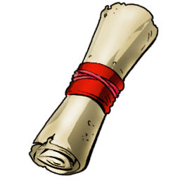

Thrall Cognedur
Chef de la Horde
Niveau 27
Chef de la Horde
Niveau 27
Compétences
- Écraseur de crânes
- Tueur d'elfes
- Suite Office
Formation
- 2011 - 2013 : Burning cruisade (Niveau 60)
- 2010 - 2011 : Arène de combat
- 2005 - 2010 : École maternelle
Expérience professionnelle
- 2015 - maintenant : Chef de la Horde
- juillet 2013 - décembre 2014 : Vendeur de potions
- mars 2013 - juillet 2013 : Tueur de loup


thrall@horde.wow
06.45.37.24.04
13, rue caverne hurlante
45024 Port-Royal
06.45.37.24.04
13, rue caverne hurlante
45024 Port-Royal